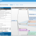

Crazy Aegir Ideas 2: The Aegir Graph or Aegir Ecology Design & Mapping
again, I preface this discussion with a "I am a crazy and annoying optimist".. I am the guy that goes at release 1.0, with a roadmap for release 2.0 starts talking about release 7.3..
anyway, enough caveats
<
h1>Mapping: Reading the Aegir Graph
the basic idea is to create an Aegir Graph. A graphing and modelling tool that would perhaps at first generate a nice visualisation of a host and clients site networks.
Graphmind already allows reading of nodes (Drupal 6 only) and views, and it would be possible to connect into the many API's, RSS, XML, RDFa, taxonomies, users etc..
Using the Graphmind module (a flex mind-mapper tool) would create a Hostmaster module which uses the Aegir API etc to map and create site networks
it could provide a node/object/graph vizualization for mapping existing and also creating new Aegir content items
you could imagine mapping all of the Aegir content types in a kind of tree, or hub and spoke model
server at center, then client, platforms, sites, packages(themes/modules/libraries), nodes/entities
drilling down from the host level (root) all the way to the tip of the branch i.e. the node/entity
<
h1>Designing: Writing the Aegir Graph
a much more advanced implementation would be to write, or create elements of the Aegir Graph i.e. elements and connections
obviously the Aegir API is providing a way for this, and as above there are other APIs, Service API, RSS, Sitemaps, RDFa etc etc..
at the moment Graphmind can write AND read, its CRUD http://drupal.org/project/graphmind
its really promising for developing a couple of generations of Aegir Graph prototypes

HTML5, ProcessingJS, Canvas etc
my gut feeling is to move away from Flex and the Graphmind interface as is, and move to something HTML5ish.
My wild spirits want me to look into ProcessingJS which is the Javascript port (almost feature complete) of the Java-based vizualization language Processing http://processingjs.org/ http://processing.org/
Processing is used online for web vizualizations, and also via installations i.e. using sensors a person can walk into a physical space and interact. Mostly its gee-wizz stuff, but there is advanced research into alternative interaction metaphors. Tablets (ipad, android) and mobile devices (iphones, android) are stretching the user experience
Processing has been used to create a visual programming environment to teach electronic circuits http://wiring.org.co/learning/basics/index.html http://wiki.wiring.org.co/index.php?title=Main_Page
together Wiring and Processing spawned the popular open-source hardware kits Arduino http://www.arduino.cc/ and also http://fritzing.org/ for prototyping
I am hoping there are enough examples of Java-based Processing visual language design tools to transfer a modified subset across to ProcessingJS to make some nice vizualizations possible.
Some useful models for design and some aesthetic visualizations for generating headers, banners, slideshows and various interactives
one small example, imagine the ProcessingJS banner as a Drupal module, that generated the header visualization based on
http://en.wikipedia.org/wiki/Processing_(programming_language)
there is also the Eclipse modelling world, which is again Java-based, providing a wealth of design patterns
next, my final Crazy Aegir Idea (for now): Aegir Ecology vs Drupal Gardens
{kind=link}
No recent comments found.